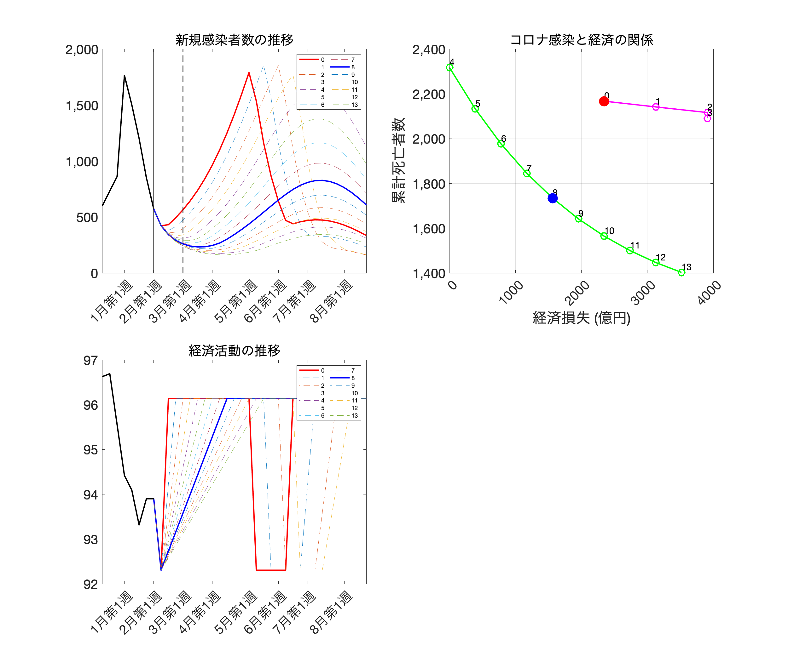
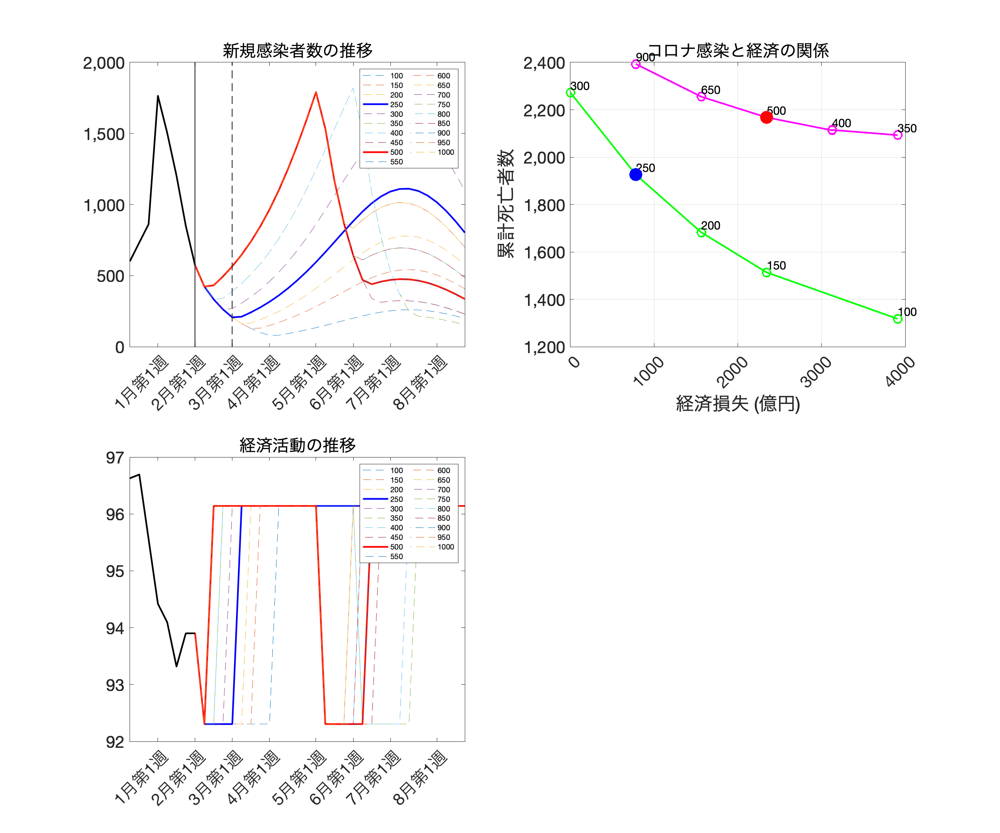

最終アップデート：2021年2月9日
** 2月7日までのデータに基づく分析です。画像はクリックすると拡大します。
図表の作成に用いたコードやデータファイルはここからダウンロードできます。
東京の過去のページへのリンク
| tokyo_20210121.html | tokyo_20210126.html | tokyo_20210202.html |
1. 東京での緊急事態宣言解除後の「経済促進ペース」分析
|  |
{kind=link}
この図表のバックデータはここからダウンロードしてください。
出所: 著者達の計算による。
- 今週は、緊急事態宣言解除基準分析に加えて、緊急事態宣言を解除した後に段階的に経済活動を促進させる（別の言い方をすると様々な制限が段階的に解除される）シナリオを分析し、感染症と経済活動がどのように「宣言解除後の経済促進ペース」に依存するかを考えます。
- 具体的には、今週１日平均新規感染者数500人を下回り、週末（2月14日）に緊急事態宣言が解除されると仮定します。宣言解除後、経済活動は去年の秋のレベルに戻ると仮定しますが、そのレベルに到達するまでに、X週間かかると仮定します。Xが大きいければ大きいほど、宣言解除後の経済促進が段階的であるということです。
- X=0で宣言解除直後に経済活動が昨年秋レベルに戻る場合（赤線）では、感染者数がすぐに増加し始めて４月末に再度緊急事態宣言が発令されます。X＝8で宣言解除後に経済活動が8週間かけて段階的に昨年秋レベルに戻る場合（青線）では、宣言解除後も新規感染者数減少が3月中旬まで続きます。そして3月末から感染者数が徐々に増加しますが、再度緊急事態宣言発令を招くことなく、ワクチン接種の力でコロナ感染を収束させることが出来ます。細い破線は他の様々なXについての新規感染者数（左上図）・経済活動（左下図）の推移です。
- 右上図の曲線は、それぞれのXに関して累計死亡者数と経済損失を記録したものです。緊急事態宣言解除基準分析の図と同じように、再度緊急事態宣言があるかないかでトレードオフ曲線が2つに分かれます。経済活動促進をより段階的にすることで再度緊急事態宣言発令を避けることが出来きます。そして、それは感染症対策と経済活動の両方の視点から良いことです。赤い点（宣言解除後に急速な経済促進）と青い点（段階的な経済促進）を比べると、青い点での方が累計死亡者数・経済損失共に小さくなっています。
- 注意が必要なのは、経済促進ペースが中途半端に段階的だと（Xの値がゼロではないが小さいと）、短期的な経済活動にもマイナスであり、なおかつ将来再度緊急事態宣言を避けることが出来ないので、経済損失は大きくなります（上の紫色の曲線の右の方）。従って、中途半端に段階的にするのではなく、（１）約2か月くらいの期間で（２）再度緊急事態発令を招かないように細心の注意を払いながら、徐々に経済活動を促進してくことが望ましいと言えます。
- 具体的には、今週１日平均新規感染者数500人を下回り、週末（2月14日）に緊急事態宣言が解除されると仮定します。宣言解除後、経済活動は去年の秋のレベルに戻ると仮定しますが、そのレベルに到達するまでに、X週間かかると仮定します。Xが大きいければ大きいほど、宣言解除後の経済促進が段階的であるということです。
2. 東京での緊急事態宣言解除基準分析
|  |
{kind=link}
この図表のバックデータはここからダウンロードしてください。
出所: 著者達の計算による。
注: 左のパネルは、基本シナリオ下での新規感染者数の推移。黒の縦実線が現在時点、点線が緊急事態宣言解除が想定されている3月第1週。赤（青）い実線は緊急事態宣言解除基準が500（250）人だった場合、その他の細い点線は解除基準人数を変更した場合。右のパネルは、それぞれの解除基準人数によってどのように１年後の累計死亡者数と総生産量が影響を受けるかを示す。シナリオの詳細についてはFujii and Nakata (2021)を参照。
- この図をどのように理解すべきなのかは、この資料[感染症対策と経済活動の両立：コロナ危機終焉に向けて]と、この資料[緊急事態宣言解除基準分析の解説・モデル分析活用の心得]に詳細に記述してあります。